Удивительная солнечная система
Старт 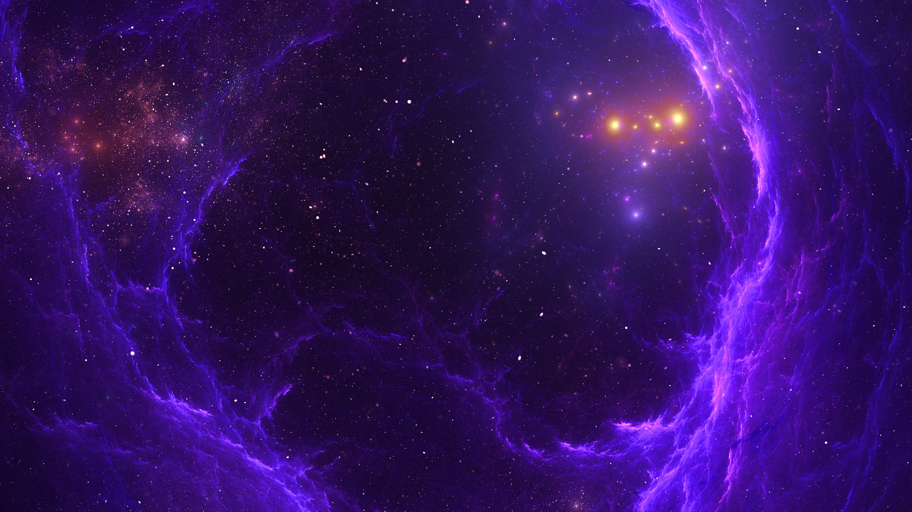 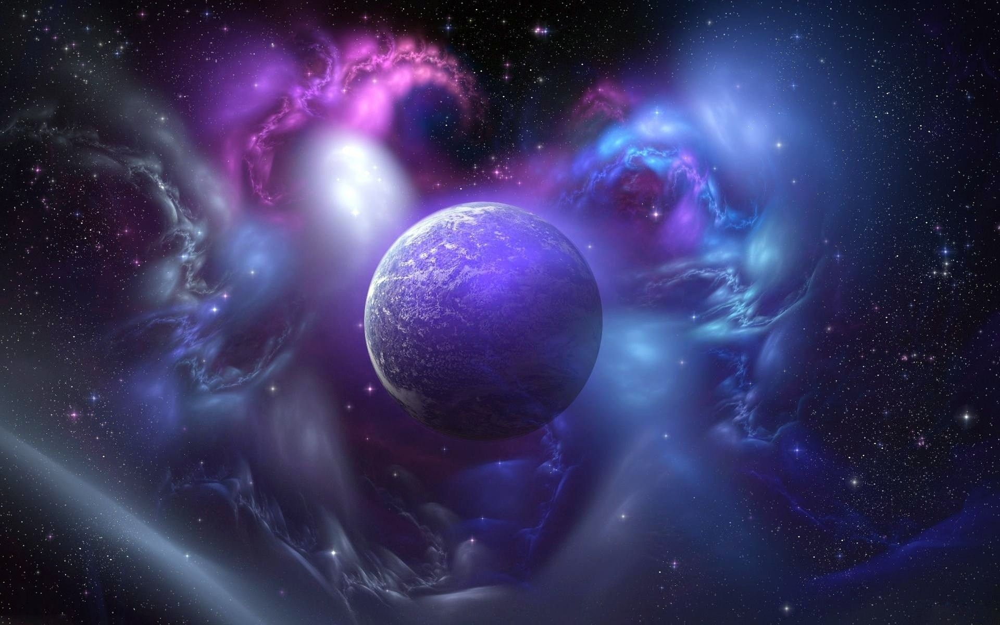
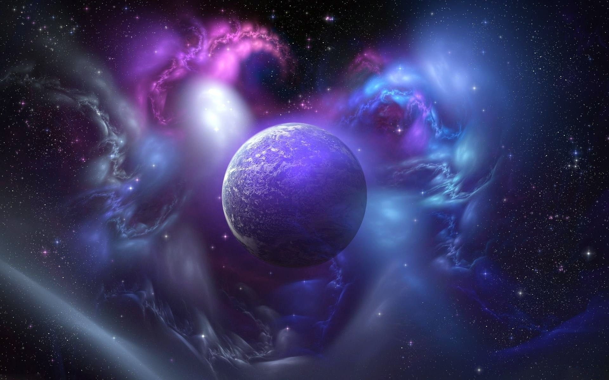
Солнце
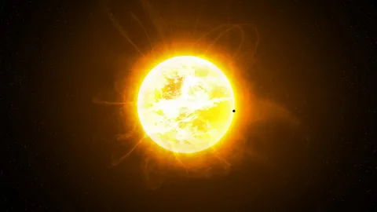Солнце — единственная звезда Солнечной системы, дневное светило. Вокруг Солнца
обращаются другие объекты этой системы: планеты, их спутники и т.п. Масса Солнца составляет 99,866
% от суммарной массы всей Солнечной системы. Солнечное излучение поддерживает жизнь на Земле,
определяет климат. Солнце состоит из водорода, гелия и других элементов с меньшей концентрацией:
железа, никеля, кислорода, азота, кремния, серы, магния, углерода, неона, кальция и хрома. По
спектральной классификации Солнце относится к типу жёлтых карликов. Температура поверхности Солнца
достигает 6000 К. В нашей галактике
насчитывается свыше 100 млрд звёзд. При этом 85 % звёзд нашей галактики — это звёзды,
менее яркие, чем Солнце. Как и все звёзды главной последовательности, Солнце вырабатывает энергию
путём термоядерного синтеза. Удалённость Солнца от
Земли, 149,6 млн км, приблизительно равна астрономической единице.
Солнце принадлежит к
первому типу звёздного населения. Одна из распространённых теорий возникновения Солнечной системы
предполагает, что её формирование было вызвано взрывами одной или нескольких сверхновых звёзд. Это
предположение основано, на том, что в веществе Солнечной системы содержится аномально
большая доля золота и урана. Излучение Солнца — основной источник энергии на Земле. Его мощность
равна приблизительно 1370 Вт/м². Проходя сквозь атмосферу Земли, солнечное излучение теряет в
энергии примерно 370 Вт/м², и до
земной поверхности доходит только 1000 Вт/м² (при ясной погоде и когда Солнце находится в зените).
Эта энергия может использоваться в различных естественных и искусственных процессах. Так, растения,
используя её посредством фотосинтеза.
Прямое нагревание солнечными лучами или преобразование энергии с помощью фотоэлементов может быть
использовано для производства электроэнергии или выполнения другой
полезной работы. Путём фотосинтеза была в далёком прошлом получена и энергия, запасённая в
нефти и других видах ископаемого топлива.
Ультрафиолетовое излучение Солнца имеет антисептические свойства, позволяющие
использовать его для дезинфекции воды и различных предметов. Оно также вызывает
загар и имеет другие биологические эффекты — например, стимулирует производство в организме
витамина D. Воздействие ультрафиолетовой части солнечного спектра сильно ослабляется озоновым слоем
в земной атмосфере.
Меркурий
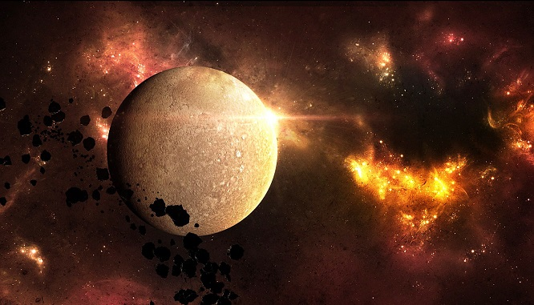Планета Меркурий является самой близкой планетой к Солнцу. Он находится на
расстоянии
всего лишь 58 млн. км от нашей звезды. Как и все планеты, Он назван в честь римского бога, в
данном
случае, римским богом торговли — так же, как древнегреческий бог Гермес
Меркурий вращается вокруг Солнца по сильно вытянутой эллиптической орбите.
В своей ближайшей точке, он приближается к Солнцу на 46 млн. км, а затем удаляется до 70 млн.
км.
Планете требуется всего 88 дней, чтобы совершить виток вокруг Солнца.
На первый взгляд, Меркурий весьма похож на нашу Луну. Он имеет поверхность покрытую кратерами, а
также древние лавовые потоки. Крупнейший кратер — бассейн Калорис, почти 1300 км в поперечнике.
Как
и у нашей Луны, у него нет заметной атмосферы. Но под поверхностью сильно отличается от Луны. Он
имеет огромное ядро из железа, окруженное толстым слоем пород мантии и тонкой корой. сила
тяжести
на планете 1/3 от Земной.
Атмосфера весьма разреженна и состоит из захваченных частиц Солнечного ветра. Без атмосферы, он
не
может
сохранить тепло от Солнца. Сторона, которая обращена к Солнцу, нагревается до температуры 450 °
C,
в то время как теневая сторона охлаждается до -170 ° С.
Венера
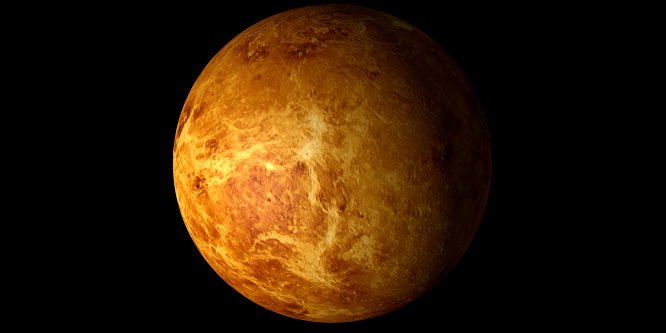Земля и Венера имеют очень близкие размеры и массу, и они вращаются вокруг Солнца по
очень сходным орбитам. Ее размер всего на 650 км меньше, чем размер Земли, а масса составляет 81,5%
массы Земли. Но на этом сходство заканчивается. Атмосфера состоит из 96,5% углекислого газа, а
парниковый эффект, поднимает температуру до 461 °C.
Венера вращается очень медленно, день составляет 243 земных суток. Еще более странно то, что она
вращается в обратном направлении, по сравнению со всеми другими планетами в Солнечной системе. Все
планеты вращаются в направлении против часовой стрелки. За исключением героини нашей статьи. Она
вращается по часовой стрелке. В самый разгар космической гонки, Советский Союз запустил серию
космических аппаратов Венера и некоторые совершили успешную посадку на ее поверхность.
Венера-8 был первым космическим аппаратом высадившимся на поверхность и передавшим фотографии на
Землю.
В то время как поверхность Меркурия, Марса и Луны усеяна ударными кратерами, на поверхности Венеры
относительно мало кратеров. Планетарные ученые полагают, что ее поверхность имеет возраст всего 500
млн. лет. Постоянная вулканическая активность, сглаживает и убирает любые ударные кратеры.
Земля
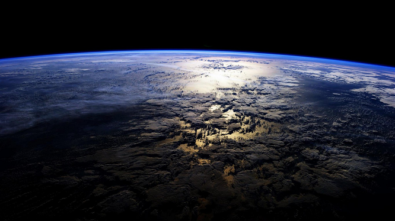Издревле наша планета Земля — это начальный пункт для развития любой вселенской науки,
будь то философия, астрономия или физика. И хотя Земля давно уже не считается центром Вселенной,
она остается центром нашего познания — все, что удается найти на космических объектах, ученые
связывают с привычными нам объектами и веществами с нашей планеты. Однако так ли много мы знаем о
нашем доме? В этой статье пойдет речь о многогранности Земли, которая служит нам верным
инструментом изучения космоса.
Земля — это уникальная по многим параметрам планета. Она является самой большой среди внутренних,
«скалистых» планет Солнечной системы, куда входят еще Меркурий, Венера и Марс. На орбите Земли
находится один из наиболее массивных спутников Солнечной системы — Луна. А еще на нашей планете
сочетается несколько феноменальных явлений — жидкая вода, плотная атмосфера, активные недра и
жизнь. Вместе эти компоненты создают такое химическое и геологическое разнообразие на Земле,
достичь которого не смогло еще ни одно известное планетное тело.
Земля обладает формой эллипсоида — сферы, приплюснутой со сторон, что приводит к несоразмерности
линейных измерений планеты. Скатайте шарик из пластилина, прижмите его слегка пальцами со сторон —
и у вас в руках уменьшенная модель земного шара! Диаметр Земли от Северного полюса до Южного
составляет 12 712 километров, когда на экваторе — 12 756 км. Большие планеты приобретают
сферическую форму благодаря воздействию гравитации — она заставляет вещество равномерно отдаляться
от центра массы космического тела. Почему же тогда Земля не представляет собой идеальный шар? Все
дело в центробежной силе, возникающей из-за вращения планеты вокруг собственной оси. Из-за нее
Земля шире в плоскости вращения и уже по оси, то есть на полюсах.
К слову, истинно-научное определение формы Земли — референц-эллипсоид. Это связано с тем, что
поверхность планеты отличается от поверхности идеальной геометрической фигуры — материки пересекают
высокие горы и глубокие долины, а сами континенты возвышаются над мировым океаном. Такое видение
фигуры нашей планеты используется в точных науках — например, в геодезии.
Наша планета — один из немногих объектов в Солнечной системе, геологическая активность которого
продолжается по сей день. Вода, воздух и солнечный свет вступают в реакцию с веществом на
поверхности, недра нашей планеты до сих пор раскалены — все это приводит к созданию разнообразных
химических соединений, которые не встречаются на соседних планетах.
Марс
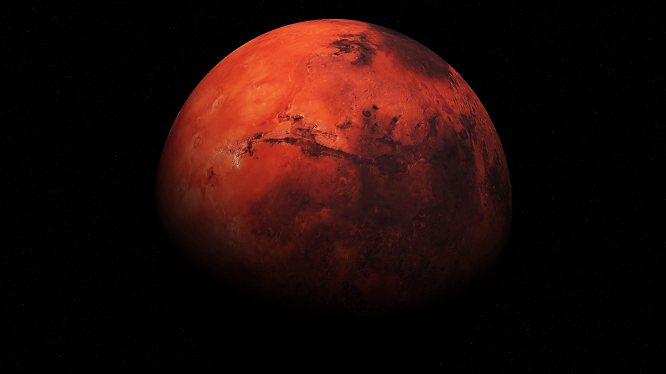
Марс по строению похож на Землю, он также имеет ядро, которое в основном состоит из железа и серы,
мантии, состоящей из силикатов и коры, сделанной из базальта с примесями оксида железа, которая
дает планете характерный красноватый оттенок.
Его ядро, как и Земное, состоит из основного компонента — железа. На этом сходство заканчивается.
Ядро Земли расплавлено и находится в постоянном движении. Внутреннее ядро вращается в
противоположном направлении, в отличие от внешнего. Это взаимодействие создает магнитное поле,
которое защищает нашу поверхность от солнечной радиации.
Ядро Марса является твердым и не вращается. Считается, что оно имеет размер около 2960 км в
диаметре. Планета
не имеет магнитного поля из-за чего постоянно подвергается солнечному излучению.
Мантия покрывает ядро. У планеты нет движения тектонических плит, поэтому поверхность не меняется и
углерод не удаляется из атмосферы. Мантия считается довольно мягкой.
Земная кора образовалась в результате вулканической деятельности миллиарды лет назад. Ее размер
колеблется между 50 и 125 км. Большая часть поверхности Марса покрыта порошком из оксида железа.
Учитывая легкость пыли и высокую скорость ветра на Марсе, его поверхность постоянно подвергается
изменению в относительно короткие сроки.
Марс не имеет океанов, рек и озер, но космический аппарат НАСА Mars Odyssey, обнаружил огромные
запасы воды под поверхностью, по всей планете — в виде льда. Миссия Phoenix прибыла для поиска льда
под почвой у северной полярной шапки. На Земле, ученые обнаружили, что жизнь может адаптироваться
практически к любой среде – главное, чтобы была вода. Жизнь существует на дне океана, внутри
ядерных реакторов, и глубоко внутри Земли при огромных температурах. Везде, где есть вода на Земле,
ученые обнаружили жизнь. Если есть жидкая вода, то там может быть жизнь или признаки того, что
раньше эта жизнь существовала, что также будет грандиозным открытием. Есть много примеров того, что
вода раньше была на поверхности много миллиардов лет назад. Орбитальные космические корабли сняли
древние русла, и, возможно, даже береговые линии давно умерших океанов.
Юпитер
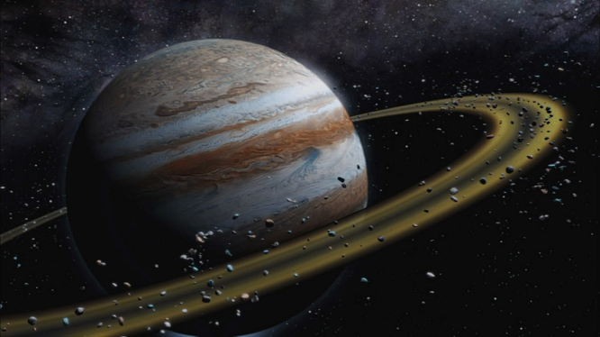
Как вы знаете, Юпитер в Солнечной системе самый большой, и у него 79 спутников. Около планеты
побывало несколько космических зондов, которые изучали его с пролетной траектории. А космический
аппарат Галилео, выйдя на его орбиту, изучал его в течение нескольких лет. Самым последним был зонд
«Новые Горизонты». После пролета планеты, зонд получил дополнительное ускорение и направился к
своей конечной цели — Плутону.
У Юпитера есть кольца. Они не такие большие и красивые как у Сатурна, потому что тоньше и слабее.
Большое красное пятно — это гигантский шторм, который бушует уже больше трехсот лет! Несмотря на
то, что планета Юпитер размер имеет поистине огромный, ему не хватило массы, чтобы стать
полноценной звездой.
Вы, возможно, заметили, что в его атмосфере существуют различные овалы и круги, крупнейшим из
которых является Большое Красное Пятно. Это вихри и штормы, которые бушуют в крайне нестабильной
атмосфере. Вихрь может быть циклонический или антициклонический. Циклонические вихри обычно имеют
центры, в которых давление более низкое, чем снаружи. Антициклонические это те, у которых есть
центры с более высоким давлением, чем снаружи вихря.
Большое Красное Пятно бушует в Южном полушарии вот уже
400 лет. Многие считают, что Джованни Кассини впервые наблюдал его в конце 1600-х годов, но ученые
сомневаются, что он сформировался в то время.
В ранней истории развития Юпитер должен был сформироваться полностью из скалистых пород и льда с
достаточной массой для того, чтобы захватить большинство газов в ранней Солнечной туманности.
Поэтому его состав полностью повторяют смесь газов протосолнечной туманности.
Современная теория считает, что основной слой плотного металлического водорода простирается на 78
процентов радиуса планеты. Прямо над слоем металлического водорода простирается внутренняя
атмосфера из водорода. В ней водород находится при такой температуре, когда нет четкой жидкой и
газовой фаз, фактически он находится в сверхкритическом состоянии жидкости. Температура и давление
неуклонно растет по мере приближения к ядру. В области, где водород становится металлическим,
считается, что температура равняется 10,000 К, а давление 200 ГПа. Максимальная температура на
границе ядра оценивается в 36,000 K с соответствующим давлением от 3000 до 4500 ГПа.
Сатурн
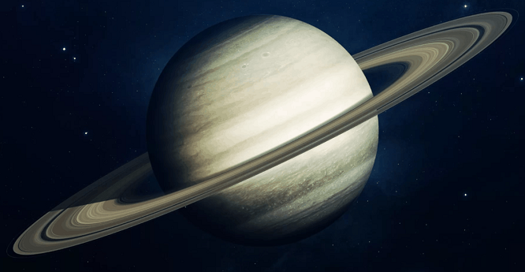
Знаете ли вы, из чего сделаны ее знаменитые кольца? Кольца состоят из ледяных камней, имеющих
размер от микронов до нескольких метров. Сатурн как и все планеты-гиганты, состоит в основном из
газов. Его вращение варьирует от 10 часов и 39 минут до 10 часов 46 минут. Эти измерения основаны
на радионаблюдениях планеты. Самая большая планета Солнечной системы Юпитер. Но титул второй по
размеру планеты принадлежит Сатурну.Планета очень большая, но легкая. И если Сатурн
погрузить в воду, она будет плавать на поверхности. Гравитация планеты составляет всего 91% от
Земной. Сатурн и Земля различаются по размеру в 9,4 раза и по массе в 95 раз. В объеме газового
гиганта могли бы поместиться 763 таких планет как наша.
Одним из интересных фактов, является то, что ось планеты наклонена к плоскости эклиптики (как и у
Земли). И так же, как и у нас, на Сатурне существуют сезоны. На половине своей орбиты, Северное
полушарие получает больше солнечной радиации, а затем все меняется и Южное полушарие купается в
солнечном свете. Это создает огромные штормовые системы, которые значительно меняются в зависимости
от расположения планеты на орбите. Сезоны оказывают влияние на погоду планеты. В течение последних
30 лет ученые обнаружили, что скорость ветра вокруг экваториальных областей планеты сократилась
примерно на 40%. Зонды НАСА Вояджер в 1980-1981 годах обнаружили, что скорость ветра достигает 1700
км/ч, а в настоящее время только около 1000 км/ч (измерения 2003 года).
Время полного оборота Сатурна вокруг своей оси составляет 10,656 часов. Ученым потребовалось много
времени и исследований, чтобы найти столь точную цифру. Так как у планеты нет поверхности, то нет
возможности наблюдать прохождения одних и тех же областей планеты, таким образом, оценивая ее
скорость вращения. Ученые использовали радиоизлучения планеты для оценки скорости вращения и
нахождения точной продолжительности дня. Главная отличительная черта Сатурна это кольца. Каким
образом кольца сформировались? Есть несколько версий. Традиционная теория гласит, что кольца почти
такого же возраста, как и сама планета и существуют в течение, по крайней мере, 4 миллиарда лет. В
ранней истории гиганта, 300 км спутник слишком близко подошел к нему и был разорван на куски. Также
существует вероятность, что два спутника столкнулись вместе, или в спутник попала достаточно
большая комета или астероид, и он просто развалился прямо на орбите.
Уран
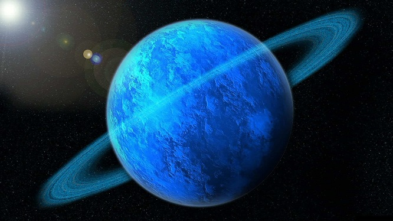Уран уникален по своему расположению, его ось находится под наклоном в 98 градусов,
что заставляет оригинальную планету совершать движение по орбите, лежа на боку. В таком положении
на области полюсов направлен основной поток солнечной энергии, но, в разрез с логическими выводами,
температура на участке экватора имеет более высокие показатели. Направление вращения ледяного
гиганта обратное, по отношению к движению по орбите. Один оборот Уран делает за 84 земных года, а
сутки проходят за 17 часов, этот срок вычисляется приблизительно по причине неравномерного
перемещения газообразной поверхности.
Планета окружена собственной системой колец, состоящих из частиц различного диаметра. Имея темный
цвет, они не выделяются и плохо заметны. Их рассмотрели только в 1977 году. Насчитывается 13 колец
– 11 внутренних и 2 внешних, имеющих окрашенный спектр. Уран не одинок в космических просторах, его
компанию разделяют 27 крупных и мелких спутников. Два из них обнаружил в 1787 году Уильям Гершель,
спустя 80 лет открыли следующую пару. Последний из пяти крупных спутников заметили почти через
столетие. Эти космические объекты имеют форму шара, их тела созданы изо льда и камня. Каждый из них
имеет свои особенности: Миранда – ближайшая к Урану луна, Умбриэль – имеет очень темную
поверхность, Ариэль – самый молодой и светлый, Оберон – изрезан кратерами, следами прошлой
вулканической деятельности. Титания похожа размерами и внешним видом на Оберон – это два крупнейших
спутника. Остальные 22 объекта были открыты позднее, при помощи мощных телескопов и аппарата
«Вояджер – 2». Для названий принято использовать имена персонажей произведений Шекспира и Поупа.
Нептун
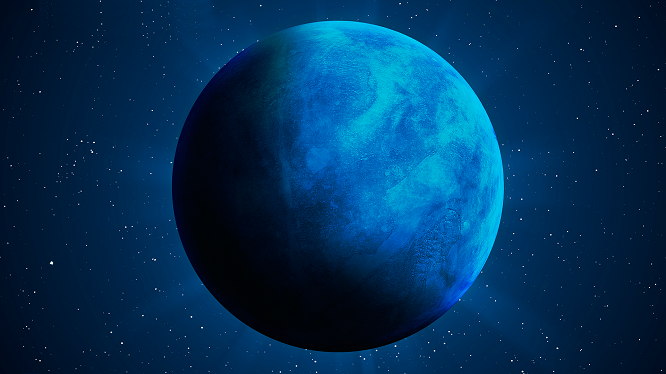После исключения Плутона из списка планет, Нептун оказался последним – восьмым –
представителем Солнечной системы. Его удаленность от центра составляет 4,5 млрд. км, на прохождение
этого расстояния волне света необходимо 4 часа. Планета вместе с Сатурном, Ураном и Юпитером вошла
в группу четырех газовых гигантов. Из-за огромного диаметра орбиты год здесь равен 164,8 земным, а
сутки пролетают менее чем за 16 часов. Траектория прохождения вокруг Солнца близка к круговой, ее
эксцентриситет равен 0,0112.
Со времени обнаружения планеты обсуждалось наличие у нее системы колец, но подтверждений теории не
находили. Только в 1984 году в чилийской обсерватории заметили яркую дугу. Остальные пять колец
были найдены благодаря исследованиям аппарата «Вояджер-2». Образования имеют темный цвет и не
отражают солнечный свет. Своими именами они обязаны людям, открывшим Нептун: Галле, Леверье, Арго,
Лассель, а самое далекое и необычное названо в честь Адамса. Это кольцо состоит из отдельных дужек,
которые должны были слиться в единую конструкцию, но не делают этого. Возможной причиной считается
воздействие гравитации не открытых еще спутников. Одно образование осталось безымянным.
Многообразие спутников
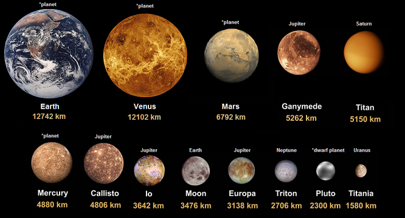Естественные спутники планет – это космические тела естественного происхождения, которые вращаются вокруг планет. Наиболее интересными для нас представляются естественные спутники планет Солнечной системы, так как они находятся в непосредственной близости от нас. В Солнечной системе всего две планеты не имеют естественных спутников. Это Венера и Меркурий. Хотя предполагается, что ранее у Меркурия естественные спутники были, однако данная планета в процессе своей эволюции их лишилась. Что касается остальных планет Солнечной системы, то каждая из них имеет как минимум один естественный спутник. Самый известный из них – Луна, которая является верным космическим попутчиком нашей планеты. Марс имеет 2 спутника, Юпитер – 79, Сатурн – 62, Уран – 27, Нептун – 14. В числе этих спутников мы можем обнаружить, как весьма непримечательные объекты, состоящие в основном из камня, так и весьма интересные экземпляры, которые заслуживают отдельного внимания, и о которых мы будем говорить ниже.
Пояс Коупера
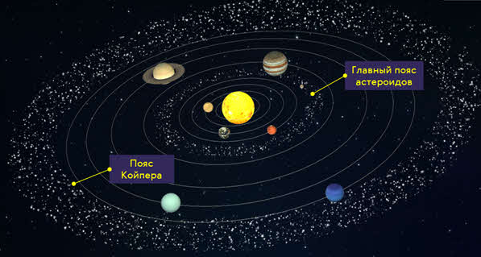Пояс Койпера — ледяной мир на окраине Солнечной системы. Это пространство, состоящее
из малых объектов. Многие из них меньше — Луны. Пояс расширяется за орбитой Нептуна
и выглядит, как пончик. Учёные считают Пояс Койпера родным домом комет. Там
рождаются короткопериодические кометы. Они проходят по орбите менее, чем за 200 лет.
Количество жителей ледяного семейства неизвестно. Предполагаются сотни тысяч объектов и триллион
комет. На данный момент подтверждено существование 1300. Карликовые планеты, принадлежащие Поясу
Койпера, обладают тоненькими атмосферами, которые разрушаются, по мере отдаления планеты от Солнца.
У некоторых из них есть крошечные спутницы — луны. Особенные из них, больше Плутона. Из-за этого
факта Плутон лишили статуса планеты. Совершенно понятно, что в ледяном мире жизни быть не может.
Астрономы только предполагали наличие объектов за Плутоном. Споры велись весь двадцатый век. В 1943
г. Кеннет Эджворт выдвинул гипотезу, что кометы, посещающие Солнечную систему, это небесные тела,
проживающие за её внешней границей. По неизвестным причинам они покидают привычные места и
путешествуют ближе к Солнцу. Своё имя Пояс Койпера получил от Джерарда Койпера. Астроном говорил о
возможности наличия диска из множества ледяных тел, но считал влияние Плутона достаточно сильным.
Предполагал, что Плутон рассеял тела к далёкому облаку Оорта.
Астрономы называют тела в этой области — объект пояса Койпера, сокращённо ОПК. Исследования ОПК
основываются на параметрах отражающей поверхности. Так определяют размер. По составу ОПК содержат,
в замороженном состоянии, углекислый лёд, азот, метан, аммиак, метанол, возможно воду. Точное
количество обитателей пояса неизвестно. При открытии нового объекта, учёные классифицируют его, как
планету или астероид. На это уходят годы, потому что видимость ограничена, сведения минимальны и
чаще, приходится основываться на предположениях.